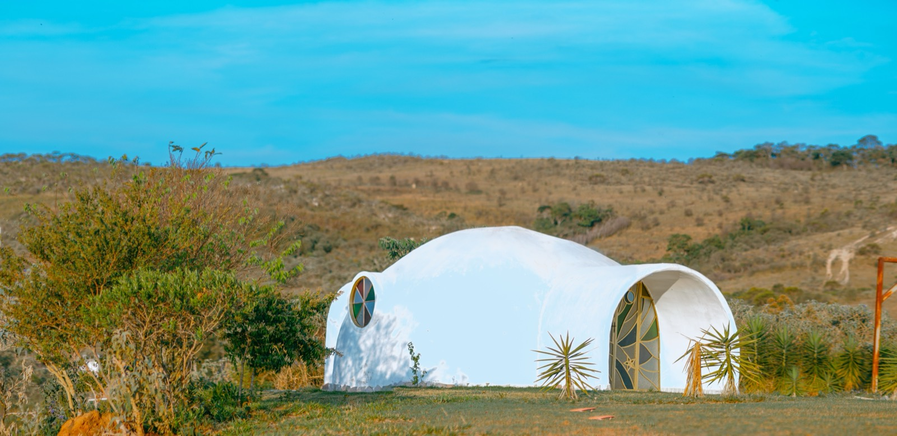

Earthbag, Superadobe & Hyperadobe
The cheapest resilient shell there is: soil packed into bags or mesh tubes, stacked and tamped. From Nader Khalili's superadobe to Fernando Pacheco's hyperadobe, like 3D-printing an earthen home by hand.

Fill long bags or mesh tubes with damp soil, lay them in courses, tamp them firm, add barbed wire between layers for grip, and you have a load-bearing earthen wall for the price of dirt. It's the cheapest resilient building method there is, and, in dome form, remarkably earthquake-, hurricane-, and fire-resistant.
Superadobe → hyperadobe: the family
Earthbag is the umbrella technique. Superadobe, developed by architect Nader Khalili at CalEarth, uses long polypropylene tubes filled with damp soil (often with 10–15% cement) coiled into domes. Hyperadobe, Fernando Pacheco's ~2010s refinement, swaps the solid poly bag for raschel knitted mesh tubing (like the netting fruit comes in). The mesh lets the plaster key through and layers bond to each other, so builders describe it as "3D-printing an earthen home by hand", cheaper, lighter, and safer to build than classic superadobe.
The numbers
If you provide the labor, the material cost is close to free, soil from your own site plus bags/mesh, barbed wire, and a little cement/plaster. Realistically $10–60/m² in materials for a DIY shell; the real cost is time and sweat. Hire it out and labor dominates. (Approximate; DIY vs. contracted swings this wildly.)
What you gain and give up
| Factor | Rating | Notes |
|---|---|---|
| Cost | 🟢 | Material ~free if DIY; labor-intensive |
| Sustainability | 🟢 | Soil = lowest embodied energy there is |
| Resilience | 🟢 | Domes resist quake, hurricane, and fire |
| DIY-friendly | 🟢 | The DIY method, hyperadobe especially |
| Build speed | 🔴 | Slow, physical, hand-built |
| Heat/climate fit | 🟢 | Thick earthen walls = cool, high thermal mass |
| Moisture/rain | 🔴 | Earth + water don't mix; needs great roof, plaster, drainage, foundation |
| Seismic/wind | 🟢 | Monolithic domes perform well |
| Permitting/finance | 🔴 | Codes rarely cover it; hard to permit/insure/mortgage |
Can you build one here?
Physically, yes, earthbag/superadobe is used across Latin America, and the seismic resistance is a real plus in Costa Rica. But the tropics throw the method's one true weakness, water, at it constantly. A tropical earthbag home lives or dies on moisture protection: a good raised foundation, wide roof overhangs, breathable-but-protective plasters, and drainage. And practically, permitting, insuring, and financing an earthen home here is hard, so it's mostly an owner-built, off-grid, or experimental path, not a route to a bank-financed family home. It's a wonderful method to know and to build a guest casita or personal project with; it's rarely the pragmatic choice for a permanent primary residence you need to insure.
Thinking about building in Panama or Costa Rica?
SORA is a fixed-price design-build platform for foreign buyers. We build in reinforced concrete by default, and we can talk you through when an alternative method actually makes sense for the tropics. Play with cost live in the 3D configurator.
See real 2026 build costs →Frequently asked questions
What is the difference between earthbag, superadobe, and hyperadobe?
Earthbag is the general technique of stacking soil-filled bags into walls. Superadobe (Nader Khalili) uses long polypropylene tubes coiled into domes, often with some cement. Hyperadobe (Fernando Pacheco) replaces the solid poly bag with raschel knitted mesh tubing, which bonds layers and plaster better, cheaper, lighter, and often described as '3D-printing an earthen home by hand.'
Are earthbag and superadobe homes safe in earthquakes?
Yes, this is a real strength. Monolithic earthbag domes and well-built superadobe structures have performed well in seismic tests and real earthquakes, which is a genuine advantage in a seismic country like Costa Rica.
Can you build an earthbag home in a wet tropical climate?
Carefully. Water is earth construction's enemy, so a tropical earthbag home needs a raised foundation, generous roof overhangs, good drainage, and appropriate plasters to keep moisture out. It's done, but moisture protection is non-negotiable, and permitting, insurance, and financing are often the bigger practical hurdles.
Sources & verification
Figures in this guide were checked against primary and authoritative sources on 27 July 2026. Immigration, tax, and cost figures change — always confirm the current rules with the official body or a licensed professional before acting.
- Tiny Shiny Home — ultimate guide to hyperadobe earthbag building
- Sustainable Life School — hyperadobe favorite method
- Natural Building Blog — earthbag/superadobe resilience